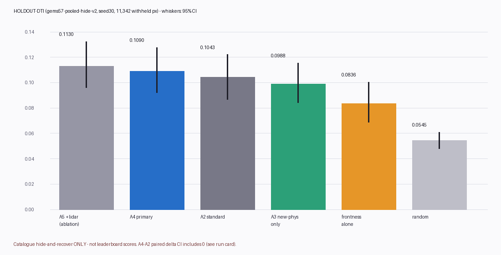
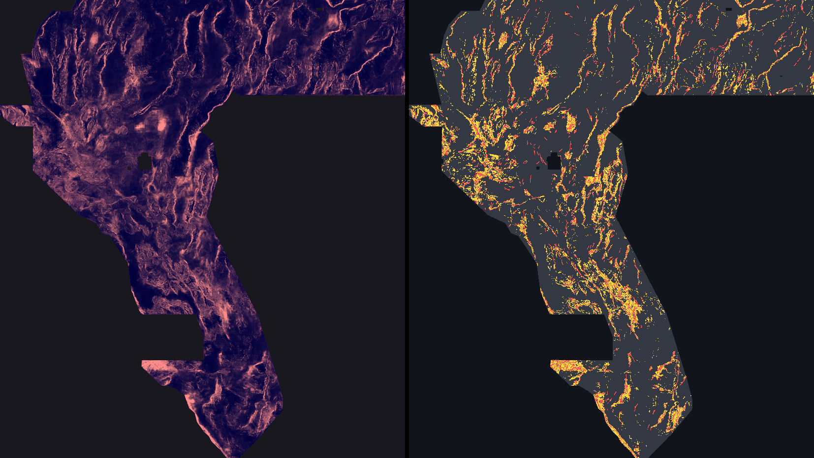

DOE GEMS Prize (DrivenData #306, GeoDAWN NW Nevada). Lane: correctly derived potential-field contact transforms (tilt / analytic signal / phase congruency / pseudogravity-Poisson) + range-front-base geomorphology, supervised-ranked. Every number below is labelled HOLDOUT-DTI, ORGANIZER-CONFIRMED, or OWNER-REPORT. No projection is written as a score.
Is the file on this page OK to download and submit? NO. The GeoTIFF is format-valid and unique (receipts below), and you may download it for inspection (that is its only approved use). It is not approved for a DrivenData submission slot: it failed the preregistered holdout promotion gate. The new-physics arm did not significantly beat the standard-feature arm — paired Δ(HOLDOUT-DTI) = +0.0026 with 95% CI [-0.0030, +0.0080] across two independent draws (22,914 withheld catalogue pixels). A CI containing 0 means “no detectable improvement”, and this project does not spend scarce weekly slots on undetectable improvements. Promotion, if any later lane earns it, is a separate human selector step. 0 slots were spent by this work.
Why publish a negative? Because a measured negative with receipts is a deliverable: it stops the next session re-spending a slot on the same idea, and its by-products below (two mislabelled band identifications, one strong single geomorphic feature, an off-catalogue proxy observation) are the usable yield. See what to do instead.
| Filename | gems77-contactphys-44090dots-20261021T030258Z-ca70a971-zeros.tif |
|---|---|
| Unique submission name (if a human ever overrode the verdict — not recommended) | gems77-contactphys-44090dots-20261021T030258Z-ca70a971-zeros |
| Note field text (103/140 chars) | GEMSDOE77 contact-physics: derived tilt/AS/phase+front-base HGB, 44090 off-cat dots >3px, min-sep 2.8px |
| SHA-256 | 20be05cc671c85484e4cfc8ea40d2fced71d7ec70f20ab915f36fcc68fcc4851 |
| Format (independently re-read) | single band · float32 · EPSG:32611 · 100 m · 3730×3292 · 44,090 dots · 0 NaN anywhere · min 0.0 max 1.0 · no nodata tag · 0 dots on the mapped catalogue · nearest dot 3.16 px from the catalogue — pass-2 receipt · writer receipt |
| Download OK? (format) | YES — format-valid |
| Submit OK? (science / selector) | NO — verdict negative, see banner |
Step-by-step DrivenData submission instructions (for any future promoted file) are on the executive summary page, including the root cause of the portal error “Predicted values must be in range [0, 1]”.
The family's best file is not new geology — it is emission arithmetic on an older field. Owner-reported chain: solid H19-5 surface (121,131 px → 0.1922) → dotted thinning d1.5 (60,069 px → 0.2477) → d2.8 (44,090 px → 0.2600) → solo prune (40,199 px → 0.2708) → h33-2-b2 deletes every dot within 2 px (200 m) of the mapped catalogue (37,654 px → 0.2778). Under the official metric DTI = TPw / (TPw + 0.2·FPw + 0.8·FNw) with a 300 m triangular kernel, each emitted unit always adds 0.2 to the denominator but earns at most its kernel credit k; a dot helps iff k > 0.2·DTI (≈0.054 at DTI 0.27). Dots hugging known faults cover structures that are already mapped (and therefore not in the hidden truth) — they pay the false-positive tax for almost no credit. Deleting them, and spacing the rest so one dot covers each 300 m kernel footprint, raises credit per dot without finding a single new fault. That is why thinning bought +0.086 (0.1922→0.2778).
Beating it — let alone the public leader at 0.4413 (ORGANIZER-CONFIRMED, leaderboard read 2026-10-21) — cannot come from more thinning. At equal emitted mass the leader's pixels earn roughly 60% more mean kernel credit than the H19-5 family's; only a better-ranked field (pixels closer to real unmapped faults) can supply that. This repository tested one new field family honestly; it did not clear the bar (below). No score in this repository is organizer-confirmed for any local file; 0.2778 itself is an owner report without a receipt in any inspected sibling repo, and no local proxy reproduces it — flagged as irregularity IR-77-04.
Ranked hypotheses were frozen in registry/preregistration_contactphys.json before Exp 1. Top lane:
buried basement contacts (magnetic tilt zero-cross + analytic-signal ridge coincident with a gravity-tilt edge,
gated by the sign of the basement-depth step) and range-front bases (flat piedmont pixels adjacent to a straight
steep front). Named non-fault mimics: intrusive contacts/caldera margins, Lake Lahontan shoreline benches,
survey-block seams. Validation = shared-template whole-component quadrant hide-and-recover
(gems57-pooled-hide-v2, α=0.2 β=0.8 R=300 m): whole fault components withheld, 3 px feature buffer,
12 px domain erosion, visible faults masked pixel-exactly, pooled DTI with paired 20 km-block bootstrap CIs.
Leakage canary first: worst new-feature symmetric holdout AUC = 0.5874
(frontness) — far below the 0.90 leakage stop.
| Arm (seed-30 draw) | HOLDOUT-DTI | 95% CI | Dots in folds |
|---|---|---|---|
| A5 standard+new+lidar (ablation only) | 0.1130 | [0.0961, 0.1325] | 44,089 |
| A4 primary: standard+new physics (no lidar) | 0.1090 | [0.0921, 0.1277] | 44,089 |
| A2 standard block (control) | 0.1043 | [0.0866, 0.1221] | 44,089 |
| A3 new physics only (16 ch) | 0.0988 | [0.0842, 0.1155] | 44,089 |
| Single feature: frontness | 0.0836 | [0.0689, 0.1004] | 44,089 |
| Single feature: contact confluence | 0.0571 | [0.0447, 0.0690] | 44,089 |
| Single feature: phase congruency (mag) | 0.0404 | [0.0326, 0.0486] | 44,089 |
| A0 random dots (matched) | 0.0545 | [0.0478, 0.0610] | 44,089 |
Paired Δ A4−A2 (seed 30): +0.0047 [-0.0027, +0.0124] — gate failed. Pre-declared replication (seed 21, 11,572 withheld): Δ +0.0005 [-0.0081, +0.0093]. Two-draw pooled Δ +0.0026 [-0.0030, +0.0080]. Receipts: Exp 1 · Exp 3 replication. Operating point from the Exp-1 scan (16 cells reported in the receipt): 44,090 dots, >3 px catalogue exclusion. Caveat: catalogue holdout rewards catalogue-style faults; archived H33 dots score 0.0043 HOLDOUT-DTI here because they were pruned away from the catalogue by construction — instrument divergence, not evidence about live score.


Left: final full-catalogue probability surface (400 m mean downsample). Right: mapped catalogue (red) and the 44,090 emitted off-catalogue dots (yellow, 400 m max downsample). Dots flank and extend mapped traces and follow off-catalogue lineaments — visually plausible is not validation; the holdout table above governs.
| Finding | Measurement (200k footprint sample) |
|---|---|
Band 6 tc, tagged “Tilt angle or total curvature”, is radiometric total count. The shipped stack contains no tilt derivative. |
Spearman(band 6, GeoDAWN TC) = 1.0000; vs derived tilt atan2(vg,hg) = 0.0199; range [2.95, 88.57] |
Band 18 iso_grav_anom_hg is the x-derivative of gravity, not a horizontal-gradient magnitude (it is signed). |
Spearman vs ∂g/∂x = 0.9451; vs |∇g| = -0.0040 |
| Controls: band 3 ≈ |∇TMI| (ρ=0.9976); band 9 ≈ vertical derivative (ρ=0.9899); band 19 ≈ |∇DEM| (ρ=0.9719). | diagnostics receipt |
Also measured single-feature results worth keeping: frontness alone reaches HOLDOUT-DTI 0.0836 (best single channel tested); the new-physics-only arm is the best of all arms on the secondary SGMC-off-catalogue proxy (PROXY-DTI 0.1226 vs standard 0.0926, 62,122 proxy pixels) — an hypothesis for a future preregistration, not a claim here.
Compared with the shared gems57.uniqueness tool against 43
locally hash-verified sibling rasters (GEMSDOE32 + GEMSDOE70 downloads), on the continuous surface before placement
and again on final dots. Thresholds: Spearman ρ > 0.90 or mutual 3-px dot overlap > 0.70 ⇒ duplicate.
Result: 0 duplicates. Worst surface ρ = 0.160;
worst final-dot mutual overlap = 0.460
(worst forward 0.528 vs
gems70-p5-submodular-multiphysics-hydro-54000-20261020.tif).
Scope caveat: this is the locally present subset, not a certified full-inventory scan — full certification is a
selector step. Prior submissions were used only for decorrelation checking, never as input to the field.
Post-merge supplement (2026-10-21): two sibling lanes merged to main concurrently (H77C claycap; selective-U urank). Against their rasters this candidate is placement-distinct under the binary-dot reading (forward overlaps 0.108–0.110, |ρ| ≤ 0.003). The literal tool now on main flags the dense continuous urank surface as a universal overlap blocker (0.979) — a documented template divergence (IR-77-09), recorded in evidence/uniqueness_supplement_postmerge.json. Verdict unchanged under either reading.
| Source | Status here |
|---|---|
| DrivenData #306 problem description, metric, submission format | Fetched & verified 2026-10-21 (α=0.2 β=0.8 R=300 m; worked example recomputed) |
| Public leaderboard | Fetched 2026-10-21: #1 xiaofanhu 0.4413 ORGANIZER-CONFIRMED (public board) |
| Official reference solution (U-Net) | Fetched 2026-10-21 |
| GEMSDOE32 (h33-2-b2 origin) · GEMSDOE70 | Fetched 2026-10-21; 0.2778 remains OWNER-REPORT (no receipt found) |
| USGS GeoDAWN data release · INGENIOUS · GDR 1391 · EPSG:32611 · Tversky index | Listed from the competition pages/brief; not re-fetched this session |
| NLR rules PDF 96647 · USGS FDSN event service | Unreachable from this sandbox (HTTP 000, verified 2026-10-21); named official sources for an unrestricted machine |
| Miller & Singh 1994 tilt derivative DOI; Verduzco et al. 2004 DOI | Bibliographic (paywalled; transforms implemented from standard definitions and unit-tested on synthetics) |
| Competition rasters | Owner-supplied GitHub mirrors of the login-walled DrivenData files, restored SHA-256 fail-closed (manifest in repo). Integrity-pinned, NOT organizer-authenticated. |
python3 scripts/restore_data.py --ids all (needs gh) →
python3 scripts/build_features.py → python3 scripts/run_holdout.py →
python3 scripts/build_final.py --arm A4_primary → python3 scripts/run_replication.py →
python3 scripts/verify_all.py → python3 scripts/make_run_card_and_figures.py →
python3 scripts/build_site_contactphys.py. Shared template (vendor/gems57: evaluate_holdout,
submission_writer, uniqueness) is reused unmodified. Run card: run_card_contactphys.json.